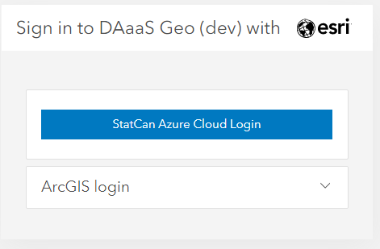
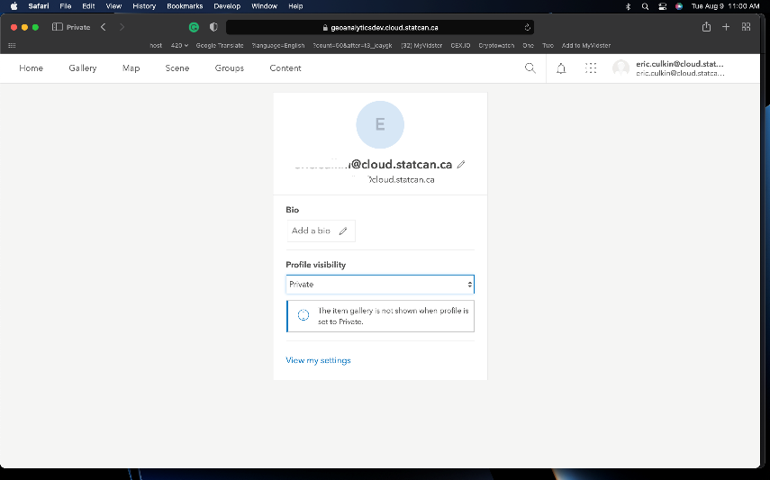
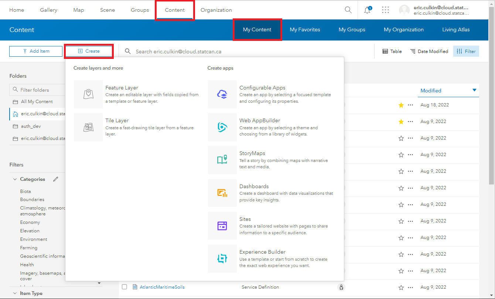
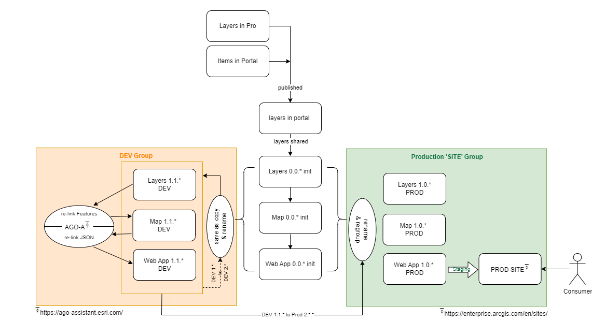
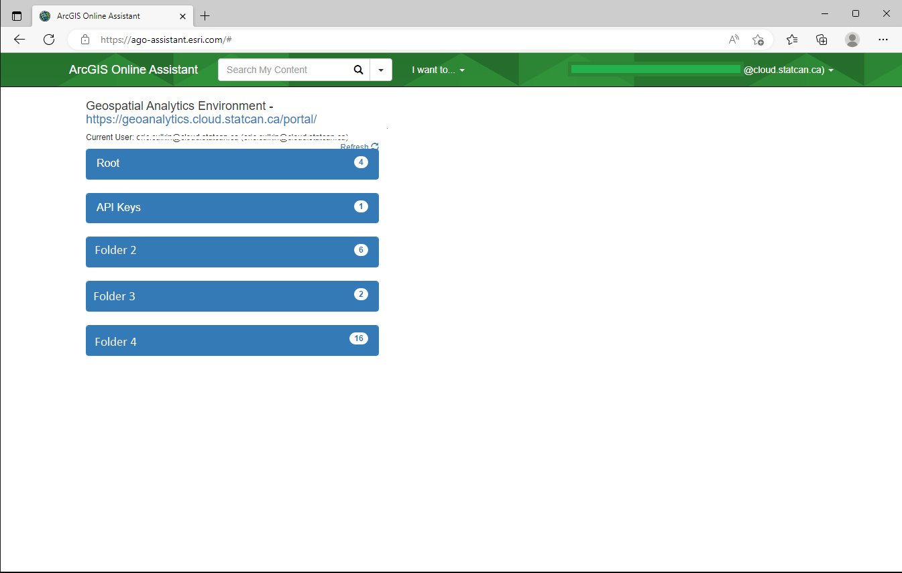
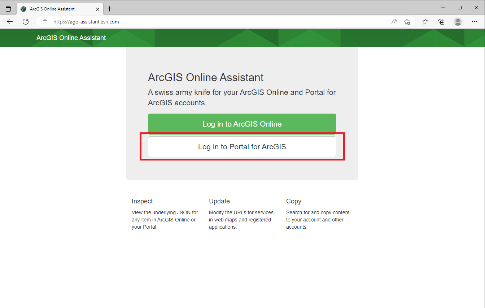

ArcGIS Portal
Becoming a User
Cloud Account
-
Visit DAaaS GAE Enterprise Portal to sign on to the ArcGIS Enterprise Portal
-
Select the StatCan Azure Login button

-
If your password was not remembered by Azure you will be asked to enter it and verify by phone

-
You will then be presented with this screen: 
-
For security reasons, your default role will be Viewer Only. Contact the DAaaS Geo Team to have your permissions adjusted. See the Contact section for help on how to contact DAS-GAE
User Roles
You will be assigned either a Project Viewer or Project Member user role depending on your needs.
-
Project Viewer
View items such as maps, apps, scenes, and layers that have been shared with the public, the organization, or a group to which the member belongs. Join groups owned by the organization. Drag CSV, text, or GPX files into Map Viewer Classic (formerly Map Viewer) to geocode addresses or place names. Get directions in a map viewer and apps. Members assigned the Viewer role cannot create or share content, or perform analysis. -
Project Member
Project Viewer privileges plus the ability to create, update and delete their own content. Users can publish hosted feature layers, hosted tile layers, hosted scene layers, and server-based layers. Share content to assigned groups. Create content such as Maps (including feature analysis tasks), Dashboards, Apps, and Story Maps.
Groups
The groups you belong to are where you can collaborate with other users on the same project or team. In the main header, click Groups. This is where you can see the groups you have been added to.
 Click on the group name to see all the shared content.
Click on the group name to see all the shared content.
Uploading/Publishing Content using Interface
Uploading Content - PRO
Shapefiles and File Geodatabases are the most common files that will be uploaded to the Portal. However a full list of supported items can be found by clicking the question mark as seen in the figure below.
Click the Content tab and under My Content, click Add Item. Select From your computer. Select Choose File and navigate to the zipped folder of the content you want to upload. Ensure the correct file types is selected from the drop down menu and Publish this file as a hosted layer is selected. Assign the content a title and tags. Click Add Item.
Note: Selecting Publish this file as a hosted layer will also publish the content as a hosted layer that can be used and shared between your group members. If the option is not selected, then the file itself (ex. File Geodatabase) will be uploaded and available for download by other group members but not useable by group members until it has been published as a hosted layer.

Similar steps can be followed to upload content via a URL to a layer or document on the web, or a URL to an application on the web.
Content can also be uploaded directly to a Web Map using the same means as outlined above.
Learn More: ArcGIS Portal; Add Items
Publishing Content- PORTAL
- Items can be published directly from your files as seen in the Uploading Content section.
- If the item file is directly uploaded to the portal such as a shapefile or geodatabase, the user can manually publish the item

- Items can also be directly imported into a Web Map (see Web Map section for more information) and published to the portal individually.

Learn More: ArcGIS Portal; Publishing
Creating Maps and Apps in Portal
Creating Web Maps
To create a Web Map, there are two options:
- Click the Map tab in the main ribbon, or
- Visit the Overview page on a specific Feature Layer and click Open in Map Viewer
Once the Web Map is open, you can being adding in layers to the Web Map by searching through My Content, My Groups, or My Organization.
Note: Performing analysis is only available in Map Viewer Classic. It is not available in Map Viewer but will be available in a future release.
Learn More: Get started with Map Viewer—Portal for ArcGIS | Documentation for ArcGIS Enterprise
Creating Interactive Apps
To create an app, navigate to the Content tab in the main ribbon and click My Content. There is a Create app button that will allow you to work with 7 different types of interactive apps.

Learn More: Get started with apps—Portal for ArcGIS | Documentation for ArcGIS Enterprise
Creating an Enterprise Site
Host and Share your Maps & Apps
What is an Enterprise Site?
ArcGIS Enterprise Sites allows you to create a tailored web page experience to help you share your GIS products to others more easily, even if they are not used to working in your GIS. Instead of learning to navigate the portal and access groups, consumers can go directly to the custom web page you create to navigate the content relevant to them. Consumers will require a Viewer role.
Sites features a built-in web page designer that integrates a drag-and-drop experience with HTML markup, giving you absolute control over the design of the web pages you create. You can also add non-GIS content, such as videos and documents, to your Site to create a central place for material relevant to your users to be hosted and accessed.
To request a Site, contact the DAS-GAE team via the Jira Board. How to submit a technical request or report a problem. Please include what you would prefer the URL to be. The URL will be formatted as:
https://geoanalytics.cloud.statcan.ca/portal/apps/sites/#/{YOUR_CHOSEN_URL}
Along with your Site, 2 groups will be created. One for editors, and one for viewers only. These groups will control who has access to your site, and which items they can interact with.
ESRI leverages a custom theme and build of the Bootstrap(3) system for page design. Users who want to use custom HTML in the SiteApp should reference this resource: Calcite Bootstrap Theme by ESRI
ArcGIS Enterprise via API
Your project group will be provided with a Client ID upon onboarding which will be used to connect to the ArcGIS Enterprise Portal. Paste the Client ID in-between the quotations.
Connecting
gis = GIS("https://geoanalyticsdev.cloud.statcan.ca/portal", client_id=' ')
print("Successfully logged in as: " + gis.properties.user.username)

Searching Content
# Search for content in your ArcGIS Enterprise instance
query = "my search query" # replace with your search query
items = gis.content.search(query)
# Print out the results of the search
print("Search results for '{}':".format(query))
for item in items:
print("{} - {}".format(item.title, item.url))
Uploading Content
# Define the path to the file you want to upload
file_path = "/path/to/your/file"
# Upload the file to your ArcGIS Enterprise instance
item_properties = {"title": "My Uploaded File", "tags": "file, upload"} # replace with your desired item properties
item = gis.content.add(item_properties, data=file_path)
# Print out the URL of the uploaded item
print("Uploaded item URL: {}".format(item.url))
```
###Create a WebMap
```python
# Create a new web map
webmap_properties = {"title": "My New Web Map", "snippet": "This is my new web map."} # replace with your desired web map properties
webmap = WebMap(webmap_properties)
# Save the web map to your ArcGIS Enterprise instance
webmap_item = webmap.save(item_properties=webmap_properties)
# Print out the URL of the new web map
print("New web map URL: {}".format(webmap_item.url))
Analysis
# Get a reference to the feature layer you want to summarize
layer_url = "https://your-arcgis-enterprise-url.com/server/rest/services/your-service/FeatureServer/0" # replace with your layer URL
layer = gis.content.get(layer_url).layers[0]
# Example: Summarize the data in the feature layer
result_layer = summarize_data(layer, ["field1", "field2"], ["sum(field3)", "avg(field4)"], output_name="Summary Layer") # replace with your field names and summary functions
# Print out the URL of the summarized data
print("Summarized data URL: {}".format(result_layer.url))
Learn More about the API; ESRI Documentation
Working with Multiple Versions (DEV-PROD)
Utilizing separate 'workspaces'
Creating separate test and production workspaces can provide significant benefits to project, including improving their development processes, reducing risk, and enhancing the reliability and security of their systems.
However, physical separation of dev-test-prod workspaces is not feasible on DAS. Nonetheless, GAE can help by creating separate groups that emulate separate workspaces. Since each project has unique needs, there is no one-size-fits-all solution. However, the general process usually looks like this: 
If you are using an ArcGIS Site to share your app, the workflow will typically look like this:

Users can use the ArcGIS Online Assistant to repair/relink layers and maps as needed. See the next section for advice on using the tool. IIt is essential to follow best practices, especially in naming and data organization when working with multiple workspaces.
Replacing a layer within an existing Web Map
There may be a scenario where you want to replace a layer in a map with an updated version or a replacement dataset. There are several ways to accomplish this, one of the easier methods is using the ArcGIS Online Assistant
Proceed with Caution!
Changing a layer in an existing map may have unintended consequences. App Widgets and controls linked to the map might break and need to be reconfigured. Ensuring layer names and table headers match old versions will help keep compatibility, but there is no guarantee.
Risks include: Corrupting content, losing access to items, breaking apps built ontop of the map.
-
Log in to Portal for ArgGIS

-
Enter the Portal URL https://geoanalytics.cloud.statcan.ca/portal ,and, your APP ID (API Key) from the ArcGIS Portal

-
A pop-up window will appear, select StatCan Azure Cloud Login

-
In the Assistant Home page, Select the folder where you map is saved on the Portal 
-
Select I want to, then Update the URLs of Services in a Web Map

6.In the Find file, enter the URL of the old layer you want to replace. In replace enter the new URL. Scroll down and select Update Then wait for the Success message.

Where to find the Feature Service URL
The URL Can be found in the Portal, on the Feature Services Overview Page:

The data in your map will now reflect the new service. You will may need to adjust the Name of the layer on your map, as it will reflect the origina layer.
For those who prefer to do things via Python API; follow these instructions provided by ESRI
Replacing a Web Map within an existing Web App
Proceed with Caution!
Changing a map in an existing web app may have unintended consequences. Widgets and controls might break and need to be reconfigured. Ensuring layer names and table headers match old versions will help keep compatibility, but there is no guarantee. DAS-GAE recommends experimenting on a demo/copied app first.
Risks include: Corrupting content, losing access to items, breaking apps built ontop of the map.
There may be a scenario where you want to replace a web map with a new map in an already built web app. We will walk you through how to do this using the AGO Assistant. We will use the same ArcGIS Online Assistant tool as above, but with a different workflow.
-
Log in to Portal for ArgGIS 
-
Enter the Portal URL https://geoanalytics.cloud.statcan.ca/portal ,and, your APP ID (API Key) from the ArcGIS Portal
-
A pop-up window will appear, select StatCan Azure Cloud Login
-
In the Assistant Home page, Select the folder where you map is saved on the Portal
-
From the I want to... button, select View an Item's JSON, then select the desired app from the highlighted list. The JSON data will appear on the right.

-
Scroll down on the JSON data pane, to the Data category, and Select the Edit icon. The data tile will turn to dark-mode, signifying it is in edit mode.

-
In the data tile, locate the map attribute, and replace the itemID field with the new maps ID.

How to find a Map Id
The Map Id can be obtained by visiting the Map's overview page, and copying it from the URL

-
Scroll up to the beginning of the data tile and select Save.
Confirm the changes in your app, and reconfigure widgets as needed.
Cloning with the API
# Connect to the source portal
src_gis = GIS("https://geoanalytics.cloud.statcan.ca/portal", client_id='')
# Connect to the destination portal
dest_gis = GIS("https://geoanalytics.cloud.statcan.ca/portal", client_id='')
# Clone the web app and its linked resources
web_map_item = src_gis.content.get("web_map_item_id")
cloned_item = web_map_item.clone(portal=dest_gis, folder="folder_name")
# Loop through the cloned item's dependent items and clone them too
for dependency in cloned_item.dependencies:
dependency_item = src_gis.content.get(dependency["id"])
cloned_dependency = dependency_item.clone(portal=dest_gis, folder="folder_name")
# Update the cloned item's dependency with the new item ID
cloned_item.update_item_dependencies(dependency_item.id, cloned_dependency.id)
print("Web app and its linked resources cloned successfully!")
Proceed with Caution: CLONE vs COPY
This clone method does not always work. Some dataset, layers, items, etc, will be COPIED instead of CLONED. Copies reference back to the original item, pay close attention to the items ID. It will NOT work for 'map image layers'.
Best Practices
Tags
- Items should only be shared to your group. Do not share to the enterprise or public level.
- Use many appropriate tags - this is how most people will find your work.
- Use common tags for items that are related.
Content Management
-
Organize content: Use a structured and logical system to organize content in the portal. This can include creating folders, groups, and categories to make it easier for users to find and access content.
-
Use metadata: Include comprehensive metadata for all items in the portal to make it easier for users to discover, understand, and use the content
-
Use a Naming Convention
- Use Semantic Versioning
- A three-part version number (Major.Minor.Patch)
- ex: My Map v1.2.4, EV_Viewer_App DEV v0.0.2
- add a Last Updated: attribute to the details in the item's overview page
- Use Semantic Versioning